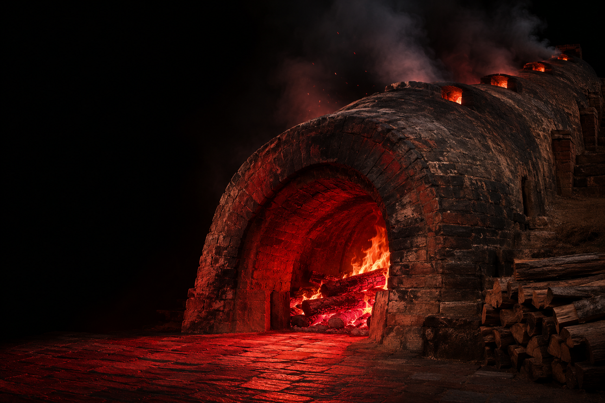

INDEPENDENT MINDS. SHARED AMBITION.ICHEON, KR +

ORIGIN / THE KILNICHEON, SOUTH KOREA
01 / OUR DNAA DIFFERENT KIND OF CRAFT
ROOTED IN
CRAFT.
WIRED FOR
THE FUTURE.
디테일을 향한 집요함, 경계 없는 상상.
이천의 가마에서 흙이 도자기로 빚어지듯,
우리는 기술로 아이디어에 생명을 불어넣습니다.
공예의 섬세함과 디지털 기술의 가능성이 만나는 곳,
Gama Craft입니다.
02 / WHAT WE DOIDEAS INTO EXPERIENCES
NO ORDINARY
OUTPUT.
복잡한 기술을 생생한 경험으로.
상상을 현실로 만드는 우리의 일입니다.
03 / OUR MINDSETTHE FIRE NEVER GOES OUT.
좋은 결과는 끝까지 파고드는 열정에서 시작됩니다.
KEEP THE
FIRE ALIVE
더 깊이 몰입하고, 더 멀리 상상합니다.
마지막 디테일까지, 우리답게 완성합니다.CRAFT / CLARITY / CO-CREATION
마지막 디테일까지, 우리답게 완성합니다.CRAFT / CLARITY / CO-CREATION
04 / WHAT’S NEXT?YOUR IDEA STARTS HERE
아직 구체적이지 않은 아이디어도 좋습니다.